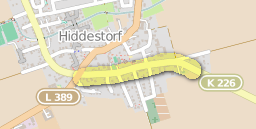

Hemminger und Pattenser Radfahrerinnen und Radfahrer treffen sich am Dienstag, 14. Juli, um 19:00 Uhr im mobile in Pattensen, Göttinger Strasse 25a, um sich über Radverkehrsthemen auszutauschen. Zu dem öffentlichen Treffen lädt die im Mai neu gegründete ADFC-Ortsgruppe Hemmingen-Pattensen diesmal nach Pattensen ein. Gast ist Dagmar Moldehn, die Klimaschutzmanagerin der Stadt Pattensen, die ihre geplanten Aktivitäten rund um klimaneutrale Mobilität vorstellen wird. Über eine mögliche Zusammenarbeit zu konkreten Projekten soll ebenfalls gesprochen werden, damit sich die Radverkehrsbedingungen auch in Pattensen weiter verbessern.
Vorgestellt werden auch die ersten ADFC-Projekte wie geführte Radtouren, Beteiligung an der Radverkehrspolitik und erste Ergebnisse des Stadtradelns 2015. Weitere Themen können gerne eingebracht werden. Engagierte Radfahrerinnen und Radfahrer sind herzlich willkommen, eine ADFC-Mitgliedschaft ist nicht erforderlich.
Aus Hemmingen starten die interessierten Radfahrerinnen und Radfahrer am 14. Juli, um 18:00 Uhr am Rathaus zu einer geführten Radtour nach Pattensen, zum Treffen im mobile.
Presse siehe rings um uns, Ausgabe 13 - Seite 17 und 20.
Stadt Pattensen und das Wanderbare Calenberger Land
Stadt Hemmingen und das Radvehrkehrskonzept
Die nächste Radtour ist für Mittwoch den 08.07.2015 um 19 Uhr mit Start am Rathausplatz in Hemmingen geplant.
B3 - Bauphase - Stadt und Land legen am 8. Juli um 18:00 in der Carl-Friedrich-Gauß-Schule Fahrplan für B3 Sperrungen vor.
Der nächste Radlertreff wird am 14.07.2015 um 19 Uhr in Pattensen stattfinden. Eine geführte Radtour wird um 18 Uhr vom Rathaus Hemmingen nach Pattensen starten.
Ein E-Lastenrad des ADFC Region Hannover wird demnächst in Hemmingen für einige Zeit zum kostenlosen Ausleihen bereit stehen. Mehr dazu in Kürze hier und auf hannah.
 ## Fahrradfreundliche Tipps und Nachrichten
## Fahrradfreundliche Tipps und Nachrichten
Tipp Radfahrkarte: Eine Quellen offene Radfahrkarte mit Routingfunktion git es under OpenRouteService.org. Mit der rechten Maustaste kann man Start- und Zielpunkt setzen.
Leine Nachrichten vom 17.06.2015: Radweg zwischen Ronnenberg und Devese an der K 221 / K 226 soll erst 2017 gebaut werden.
Leine Nachrichten vom 17.06.2015: 2016 soll die OD Hiddesdorf (K226) saniert und die Schutzstreifen erneuert werden.

Leine Nachrichten vom 17.06.2015: 2018 soll ein Radweg zwischen Ihme Rohloven und Hiddesdorf gebaut werden.
Ältere Tipps und Nachrichten gibt es unter Ältere Nachrichten
Vierte Radtour führte am 24.06.2051 bei schönem Sonnenschein zum Bentherberg.
Vom 08.05.2015 bis 08.06.2015 lagen in der Stadt Pattensen das Planfeststellungsverfahren für den Umbau des Knotenpunkts B 3 / K 203 / Wirtschaftsweg östlich Oerie im Zuge der B 3 (Stadt Pattensen) zur allgemeinen Einsichtnahme aus.
Dritte Radtour war am 17.06.2015 um 19 Uhr mit einer Strecke von 27 km.
Das Netzwerk Flüchtlingshilfe bot die erste Fahrradwerkstatt am 11. Juni in Pattensen an. Wir waren dabei. Die Fahrradwerkstatt wird bis zu den Sommerferien immer donnerstags ab 18 Uhr vor dem Rathaus Pattensen aufgebaut.

Zweite Radtour war am 03.06.2015 um 19 Uhr mit Start am Rathausplatz in Hemmingen.
Erste Radtour war am 27.05.2015 um 19 Uhr mit Start am Rathausplatz in Hemmingen.
Sechstes Treffen war am 28.05.2015 um 19 Uhr bei Mutter Buermann - Devese.
Die Ortsgruppengründung fand am 19.05.2015 im Hemminger Bürgersaal Rathaus statt. Ankündigung stand in der rings um uns und in der HannoRad 1|2015 auf Seite 28.
Mehr aus der Vergangenheit
Mit fahrradfreundlichen Grüßen, die ADFC Ortsgruppe Hemmingen/Pattensen. Zu erreichen über http://www.adfc-hannover.de/ortsgruppen/hemmingenpattensen\ - 2015-06-27-11h47.